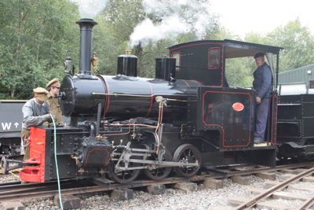

A little about us
|
The Moseley Railway Trust's mission is to preserve, conserve and interpret artefacts from Industrial Narrow Gauge Railways, including locomotives and other vehicles.
From early mining applications and experiments on country estates, the industrial narrow gauge railway came of age during the First World War when it provided the logistical support to armies on all sides and in the theatres of the conflict. The equipment from the war then provided the starting points for applications throughout any industry where large, heavy or bulky items needed to be moved.  The advent of the conveyer belt and the dumper truck rendered most of these industrial railways redundant from the 1960s, but some survive to this day, and still fulfil a vital need. For example, the Channel Tunnel construction railway was narrow gauge; for a time, this was the third largest railway system in the UK (after Network Rail and London Underground). Narrow gauge trains are still used occasionally in civil engineering projects , particularly tunnelling. Significant railways supported projects associated with the 2012 Olympic Games and the London Crossrail scheme. These railways have existed largely out of the public gaze. The Moseley Railway Trust ensures that this important part of Britain's industrial past will be preserved and remembered for future generations. In order to fulfil that objective, the Moseley Railway Trust is currently developing a major railway, workshops and museum complex in conjunction with the existing Apedale Heritage Centre at Chesterton, near Newcastle-Under-Lyme, North Staffordshire. This development will also act as a catalyst in the regeneration of the Apedale/Chesterton area. MembershipWe do also offer membership, which includes great benefits such as: Four issues per year of our house magazine "Moseley Matters" - This is much more than a newsletter and has features on industrial narrow gauge railways both current and historical. •The opportunity to become involved in restoring and maintaining historic locomotives and rolling stock - or any other work that is required in running a railway and museum. •Preferential rates on Trust publications (up to 30% on some). •Visits to other railways - get to go where the general public do not, plus a chance to drive both steam and diesel at many. •A members only e-mail discussion and information group - if you want to find something out for that modelling project or whatever reason, this is the place - our members have a wide range of Narrow gauge knowledge and can probably help - if they can't, they can put you on to someone who can! You can download our membership form here for more information and an application form. |